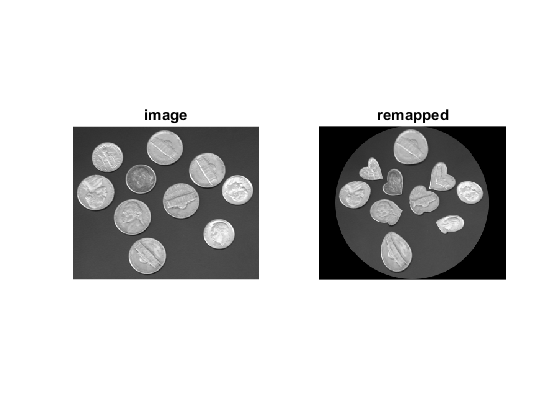

Fun with remap
Maps a rectangular image into a circle using cv.remap
To build the mapping we do the following simple geometry calculation:
- shift the origin (0,0) coordinate to the center of the image
- convert the cartesian x-y coordinates to polar r-theta form
- determine the length of the line with the same theta that touches the border of the rectangle
- retain the theta, but scale the r value based on how much the line has to shrink to fit into the circle.
- convert the modified r-theta values back into x-y coordinates
Sources:
source image
fname = which('coins.png'); if isempty(fname) fname = fullfile(mexopencv.root(), 'test', 'apple.jpg'); end src = imread(fname);
coordinates space, shifted so that origin is at the center of the image
[h,w,~] = size(src); c = [w,h] / 2; [X,Y] = meshgrid(single(1:w)-c(1), single(1:h)-c(2));
convert cartesian coordinates to polar form (r,theta)
R = hypot(Y,X); T = atan(Y./X); % NOTE: atan not atan2 % handle NaN case when atan(0/0) in the center T(isnan(T)) = 0;
scale R
radius = min(h,w) / 2; D = min(abs(c(1)./cos(T)), abs(c(2)./sin(T))); R = R ./ (radius ./ D);
remap points
map_X = c(1) + sign(X) .* R .* cos(abs(T)); map_Y = c(2) + sign(Y) .* R .* sin(abs(T));
destination image
dst = cv.remap(src, map_X, map_Y);
show result
subplot(121), imshow(src), title('image') subplot(122), imshow(dst), title('remapped')